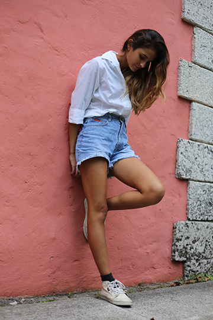

The Past, The Present, The Future
A little bit about me...I grew up here in Miami, so the ocean water runs in my veins. I started photography around the age of 18 with my first point and shoot. From then, I racked up enough money to buy my first DSLR. My perspective on photography changed from then on. I started my own little business, from taking pictures of kid's birthday parties to doing my first wedding. But as the years went on, I began to find my own style. I noticed myself taking pictures of objects, and streets, and people in motion. I find it so important for one to find their style and stick to it. So here's my page portraying who I am and what I love to capture. Hope you enjoy!